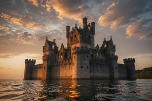

Брегово
{kind=link}

Брегово (глаг.: ⰁⰓⰅⰃⰑⰂⰑ; от breg — «берег») — бывший город в Бывшей Верхней Паннонии.
Брегово стояло на левом берегу Южной Дравы, в 40 км к востоку от Вроновицы, напротив Гоубкаславы, в излучине реки, почти полностью огибавшей город. После того как уровень воды поднялся вследствие строительства ГЭС имени Гоубки, остатки города ушли под воду; уцелели лишь руины бывшего епископского замка, ныне полностью окружённые водой.
Средние века
Место было заселено с доисторических времён: здесь располагались кельтское поселение, римский кастеллум и раннесредневековое славянское городище с крупным языческим святилищем. Дохристианские культы практиковались вплоть до 1040 года, когда святой Тибор из Эстергома со своими сподвижниками разрушил капище и основал христианскую церковь. Тибора рукоположили первым епископом Верхней Паннонии в подчинении архиепископа Эстергома. Новая кафедра непрерывно боролась со славянской литургией и глаголической традицией, центром которых служил Клыков монастырь.
В 1115 году венгерский король Бела II пожаловал бреговским епископам титул князя-епископа (паннон.: knjuz biskup), что давало им определённую светскую власть над Верхней Паннонией. Князья-епископы неизменно стремились подчинить себе мелких паннонских феодалов, нередко содержали полуофициальных наложниц, а детей от них — номинально племянников или учеников — регулярно назначали своими наследниками.
Некоторые епископы оставили о себе память. Миклош (середина XII в.) выстроил укреплённый замок, упорно добивался власти над местными феодалами и лично водил войска в бой. Янош (конец XII в.) был смещён архиепископом Эстергомским, отказался подчиниться, поднял вооружённый мятеж и победил. Тамаш (середина XIII в.) был осаждён монголами в самом Брегово, но пережил осаду. Бенедикт «Мясник» (середина XIV в.) прославился жестоким обращением с подданными. Пётр «Безбородый» (начало XV в.) слыл не сыном, а дочерью своего предшественника — легенда ничем не подтверждённая, хотя известно, что у него были связи с мужчинами. Джорджи «Работорговец» (середина XV в.) сказочно разбогател, продавая своих подданных в османское рабство, и перестроил бреговский собор в стиле флорентийского Возрождения.
В конце XV века наступил самый смутный период борьбы за кафедру. Братья Болеслав и Лукас, сыновья Джорджи, десять лет вели вооружённую борьбу за наследство, при этом оба платили взятки папе Александру Борджа. В 1505 году папа Юлий II сместил и отлучил от церкви обоих братьев, а епископом назначил итальянца, никак не связанного с династией. Пришельца тут же отравил сын Болеслава Мачаш, после чего сам захватил кафедру.
Османская эпоха
Мачаш «Вероотступник» (начало XVI в.) довёл епископат до погибели. После победы осман при Мохаче он предложил султану сдать Брегово и принять ислам в обмен на суверенную власть над Верхней Паннонией на правах османского вассала. В 1529 году он впустил турок в город и замок, но те разграбили их и сожгли, а самого Мачаша по приказу султана Сулеймана посадили на кол. Султан презирал предателя и не нуждался в его услугах: его позиции в бывшей Венгрии и без того были прочны.
Османский военачальник Хаким Абаз-бей Кузгун поначалу намеревался сделать замок турецким форпостом. Но гадание дало ему знать, что место проклято; поэтому Хаким основал Кузгун Калеси — будущую Вроновицу. С тех пор город и замок опустели, а епископский титул стал номинальным. Потомки бывших князей-епископов из рода Брегови перешли на службу к венгерским и австрийским монархам.
Новое время
Отвоевав Верхнюю Паннонию, австрийцы вернули роду Брегови часть владений, в том числе руины замка, но не епископскую кафедру. В 1820–1830-х годах Гергей Габриэль Брегови частично восстановил замок в неоготическом стиле и снова превратил его в родовую резиденцию. Его внук Адальфрид Аттила, известный путешественник и коллекционер, устроил в замке хранилище своего обширного этнографического собрания. Замок оставался во владении рода Брегови вплоть до 1944 года; бывший город к тому времени превратился в деревню, населённую преимущественно замковой прислугой.
Осенью 1944 года отряд СС занял замок как оборонительный рубеж, используя речную излучину для прикрытия переправ через Южную Драву. Советские войска несколько недель обстреливали замок; одна из башен рухнула, главный зал выгорел. Отступавшие германские части вывезли из собрания Адальфрида Аттилы самое ценное; советские войска забрали остальное. Владельцы Брегови пережили бой и остались в замке после освобождения. Когда власть коммунистов окрепла, владельцев выселили, а имущество обратили в собственность государства.
Современное состояние
Когда в 1950-х годах плотина на Южной Драве подняла уровень реки, руины бывшего города и нижний этаж замка полностью ушли под воду. Проникнуть в замок теперь почти невозможно: единственный вход затоплен, а стены отвесны и высоки. Считается, что замок проклят и населён призраками; иногда там якобы тлеют огни и раздаются голоса. Замок принадлежит Згурской Республике и с 1998 года выставлен на продажу за €1 при условии ремонта в течение десяти лет. Покупателей пока не нашлось.
Категории: Католицизм, Населённые пункты